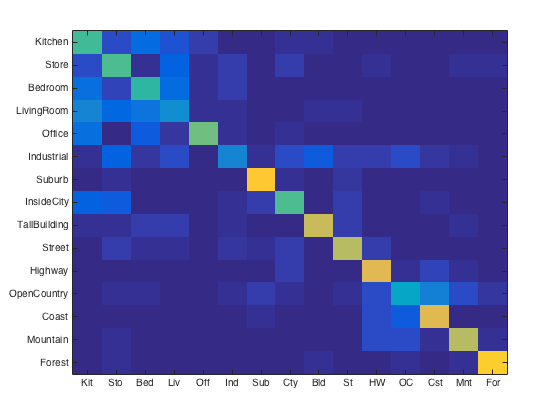

Contents
% Starter code prepared by James Hays and Sam Birch for CS 143, Brown U. % All of your code will be in "Step 1" and "Step 2", although you can % modify other parameters in the starter code.
Step 0: Set up parameters, vlfeat, category list, and image paths.
%For this project, you will need to report performance for three %combinations of features / classifiers. It is suggested you code them in %this order, as well: % 1) Tiny image features and nearest neighbor classifier % 2) Bag of sift features and nearest neighbor classifier % 3) Bag of sift features and linear SVM classifier %The starter code is initialized to 'placeholder' just so that the starter %code does not crash when run unmodified and you can get a preview of how %results are presented. % FEATURE = 'tiny image'; FEATURE = 'bag of sift'; % FEATURE = 'placeholder'; % CLASSIFIER = 'nearest neighbor'; CLASSIFIER = 'support vector machine'; % CLASSIFIER = 'placeholder'; % set up paths to VLFeat functions. % See http://www.vlfeat.org/matlab/matlab.html for VLFeat Matlab documentation % This should work on 32 and 64 bit versions of Windows, MacOS, and Linux run('~/src/vlfeat-0.9.20/toolbox/vl_setup.m') data_path = 'data/'; %change if you want to work with a network copy %This is the list of categories / directories to use. The categories are %somewhat sorted by similarity so that the confusion matrix looks more %structured (indoor and then urban and then rural). categories = {'Kitchen', 'Store', 'Bedroom', 'LivingRoom', 'Office', ... 'Industrial', 'Suburb', 'InsideCity', 'TallBuilding', 'Street', ... 'Highway', 'OpenCountry', 'Coast', 'Mountain', 'Forest'}; %This list of shortened category names is used later for visualization. abbr_categories = {'Kit', 'Sto', 'Bed', 'Liv', 'Off', 'Ind', 'Sub', ... 'Cty', 'Bld', 'St', 'HW', 'OC', 'Cst', 'Mnt', 'For'}; %number of training examples per category to use. Max is 100. For %simplicity, we assume this is the number of test cases per category, as %well. num_train_per_cat = 100; %This function returns cell arrays containing the file path for each train %and test image, as well as cell arrays with the label of each train and %test image. By default all four of these arrays will be 1500x1 where each %entry is a char array (or string). fprintf('Getting paths and labels for all train and test data\n') [train_image_paths, test_image_paths, train_labels, test_labels] = ... get_image_paths(data_path, categories, num_train_per_cat); % train_image_paths 1500x1 cell % test_image_paths 1500x1 cell % train_labels 1500x1 cell % test_labels 1500x1 cell
Getting paths and labels for all train and test data
Step 1: Represent each image with the appropriate feature
Each function to construct features should return an N x d matrix, where N is the number of paths passed to the function and d is the dimensionality of each image representation. See the starter code for each function for more details.
fprintf('Using %s representation for images\n', FEATURE) switch lower(FEATURE) case 'tiny image' % YOU CODE get_tiny_images.m train_image_feats = get_tiny_images(train_image_paths); test_image_feats = get_tiny_images(test_image_paths); case 'bag of sift' % YOU CODE build_vocabulary.m if ~exist('vocab.mat', 'file') fprintf('No existing visual word vocabulary found. Computing one from training images\n') vocab_size = 400; %Larger values will work better (to a point) but be slower to compute vocab = build_vocabulary(train_image_paths, vocab_size); save('vocab.mat', 'vocab') end if ~exist('vocab_train.mat', 'file') % YOU CODE get_bags_of_sifts.m train_image_feats = get_bags_of_sifts(train_image_paths); save('vocab_train.mat', 'train_image_feats'); test_image_feats = get_bags_of_sifts(test_image_paths); save('vocab_test.mat', 'test_image_feats'); else load('vocab_test'); load('vocab_train'); end case 'placeholder' train_image_feats = []; test_image_feats = []; otherwise error('Unknown feature type') end % If you want to avoid recomputing the features while debugging the % classifiers, you can either 'save' and 'load' the features as is done % with vocab.mat, or you can utilize Matlab's "code sections" functionality % http://www.mathworks.com/help/matlab/matlab_prog/run-sections-of-programs.html
Using bag of sift representation for images
Step 2: Classify each test image by training and using the appropriate classifier
Each function to classify test features will return an N x 1 cell array, where N is the number of test cases and each entry is a string indicating the predicted category for each test image. Each entry in 'predicted_categories' must be one of the 15 strings in 'categories', 'train_labels', and 'test_labels'. See the starter code for each function for more details.
fprintf('Using %s classifier to predict test set categories\n', CLASSIFIER) switch lower(CLASSIFIER) case 'nearest neighbor' % YOU CODE nearest_neighbor_classify.m predicted_categories = nearest_neighbor_classify(train_image_feats, train_labels, test_image_feats); case 'support vector machine' % YOU CODE svm_classify.m predicted_categories = svm_classify(train_image_feats, train_labels, test_image_feats); case 'placeholder' %The placeholder classifier simply predicts a random category for %every test case random_permutation = randperm(length(test_labels)); predicted_categories = test_labels(random_permutation); otherwise error('Unknown classifier type') end
Using support vector machine classifier to predict test set categories
Step 3: Build a confusion matrix and score the recognition system
You do not need to code anything in this section.
% If we wanted to evaluate our recognition method properly we would train % and test on many random splits of the data. You are not required to do so % for this project. % This function will recreate results_webpage/index.html and various image % thumbnails each time it is called. View the webpage to help interpret % your classifier performance. Where is it making mistakes? Are the % confusions reasonable? create_results_webpage( train_image_paths, ... test_image_paths, ... train_labels, ... test_labels, ... categories, ... abbr_categories, ... predicted_categories) % Interpreting your performance with 100 training examples per category: % accuracy = 0 -> Your code is broken (probably not the classifier's % fault! A classifier would have to be amazing to % perform this badly). % accuracy ~= .07 -> Your performance is chance. Something is broken or % you ran the starter code unchanged. % accuracy ~= .20 -> Rough performance with tiny images and nearest % neighbor classifier. Performance goes up a few % percentage points with K-NN instead of 1-NN. % accuracy ~= .20 -> Rough performance with tiny images and linear SVM % classifier. The linear classifiers will have a lot of % trouble trying to separate the classes and may be % unstable (e.g. everything classified to one category) % accuracy ~= .50 -> Rough performance with bag of SIFT and nearest % neighbor classifier. Can reach .60 with K-NN and % different distance metrics. % accuracy ~= .60 -> You've gotten things roughly correct with bag of % SIFT and a linear SVM classifier. % accuracy >= .70 -> You've also tuned your parameters well. E.g. number % of clusters, SVM regularization, number of patches % sampled when building vocabulary, size and step for % dense SIFT features. % accuracy >= .80 -> You've added in spatial information somehow or you've % added additional, complementary image features. This % represents state of the art in Lazebnik et al 2006. % accuracy >= .85 -> You've done extremely well. This is the state of the % art in the 2010 SUN database paper from fusing many % features. Don't trust this number unless you actually % measure many random splits. % accuracy >= .90 -> You get to teach the class next year. % accuracy >= .96 -> You can beat a human at this task. This isn't a % realistic number. Some accuracy calculation is broken % or your classifier is cheating and seeing the test % labels.
Creating results_webpage/index.html, thumbnails, and confusion matrix
Accuracy (mean of diagonal of confusion matrix) is 0.600
ans =
7
